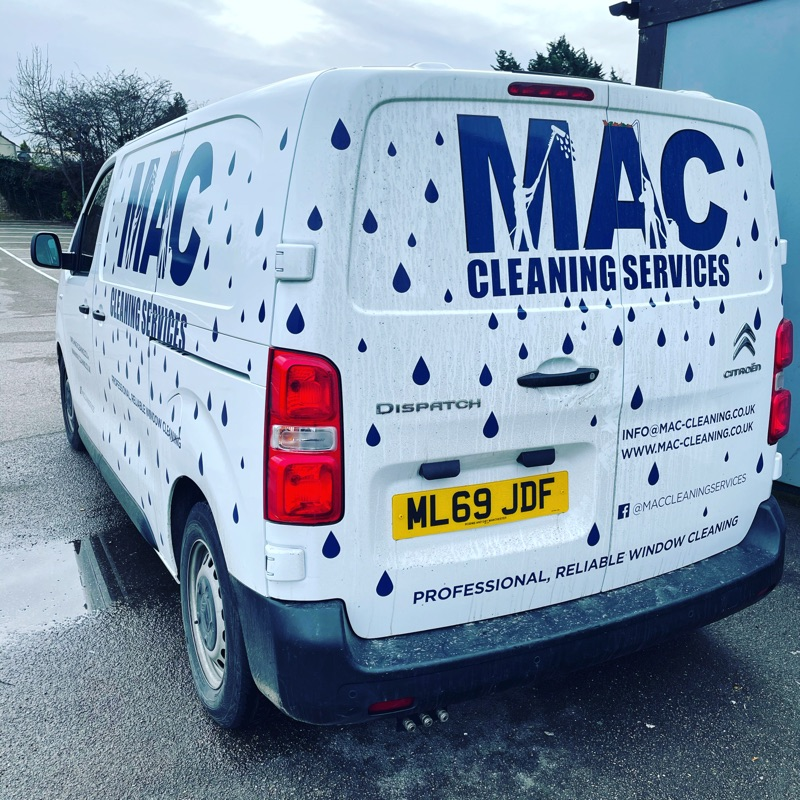

20 March 2026
Window Cleaning in Luton: Complete Guide, Prices & How to Sign Up (2026)
Everything you need to know about getting your windows professionally cleaned in Luton — prices, what's included, and how our service works.
Read more →